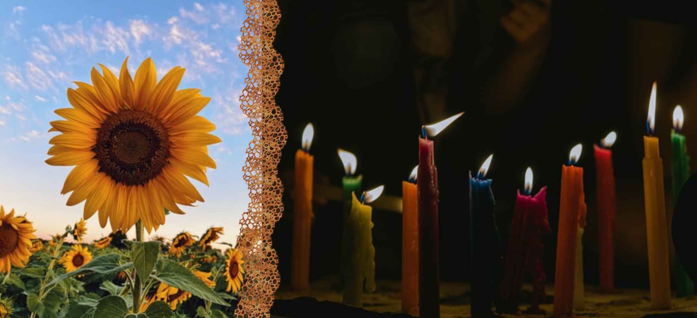

Fire is about our soul transformation and sensuality. It is like a masculine side (extremely active and dry).
The fire wind direction is South - because, in the North Hemisphere, the more you have gone to the South, the hotter could be -. So, the fire season is summer and the period of the day is midday - both show the power of the Sun and its hot. There are some colors related to this element nature: red, orange, and yellow.
The fire provides a flame into the persons, becoming them more lively, willing, proud, and in love. Then, we can connect it with our energy and spiritual vision (that transcend our eyes). The magick of this element may be considered scary and hard of manipulated, buuuut: you might just feel, like an inner light.
You must not have fear of using fire, but also you must not forget that it’s an element extremely changeable; be careful for won’t get burned.
Salamanders are fire’s elementals, but they are different than other elementals because their representation isn’t easy to think, since, like the fire, they can become any form. When we see the flame’s movement or the spark from a campfire, we might see the fire spirits - or at least their energies. Salamanders connect our soul with the sky. So, we have started to have a similarity with our ancestral and their essences.
The uncontrol with these elementals cause: lack of courage and positive energies, favoring pessimism. The excess of them may cause increased excitement and sexuality.
So, if you want to change or destroy anything, burn! The salamanders can help you to understand de fire and to manipulate it. Meet with them means of Sun, candles or hot locals.
| key words | courage, sexuality, energy, spirituality, strength, action |
| colors | red, orange, yellow, gold, white |
| direction | south |
| time | noon/midday |
| season | summer |
| tools | candles, lamps, athames |
| zodiac | Aries, Leo, Sagittarius |
| herbs | vanilla, cinnamon, carnation, sunflower, rosemary |
| crystals/stones | ruby, bloodstone, jasper, garnet |
Pay attention! All content is based on my studies and particular positioning (of a beginner witch), so you must not be locked only it; search in different websites and books, make your own path.